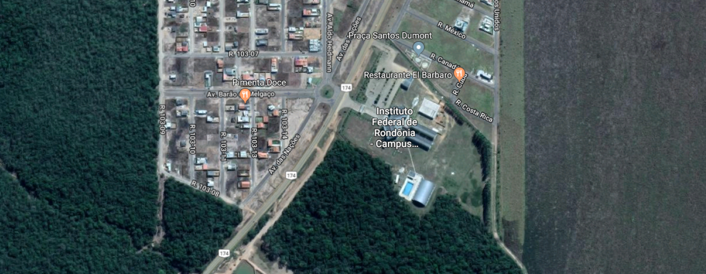

A IV Semana do CST em ADS tem como foco proporcionar aos seus alunos e comunidade interessada palestras e oficinas de áreas de Inteligência Artificial, IoT e Data Science.
Programação
15/11/2022

Palestra Cidades Inteligentes
Mariana Silva

Oficina GIt e GitHub
Mário de Oliveira
16/11/2022

Palestra Detectando placas com Deep Learning
José Silva
Localização
